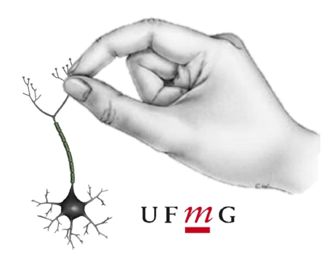

NNEUROM
Núcleo de Neurociências do Movimento

Sobre
O Núcleo de Neurociências do Movimento (NNeuroM) é um núcleo de pesquisa do Grupo de Estudo em Desenvolvimento e Aprendizagem Motora (GEDAM) da Escola de Educação Física, Fisioterapia e Terapia Ocupacional da UFMG.
O estudo do movimento voluntário é realizado em diferentes níveis de análises, que passa pelos mais macroscópicos (níveis sociológico e comportamental) até os mais microscópicos (eletrofisiológico e molecular). Para tal, o NNeuroM interage com outros laboratórios da UFMG e em outras instituições no Brasil e no exterior. Integrantes de diferentes áreas de formação participam do núcleo, tais como Educação Física, Fisioterapia, Terapia Ocupacional e Música.
Linhas de Pesquisa
Associação entre fatores que otimizam a aprendizagem motora e aspectos neurobiológicos
Modulação da resposta central no controle motor
Papel de áreas cerebrais no controle e aprendizagem motora
Funções executivas, transtornos psiquiátricos e comportamento motor